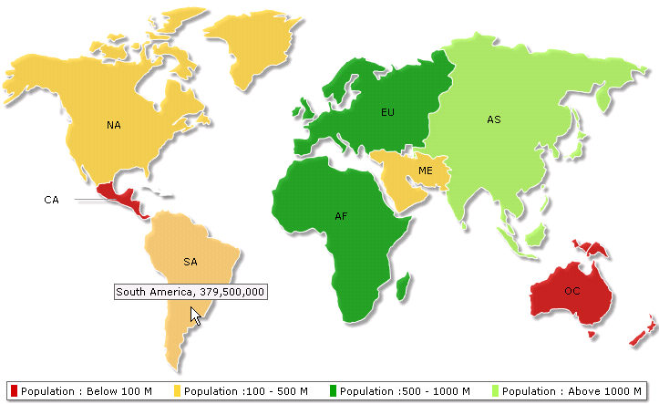

|
In this section we will see how to render a map using Data URL method - where the XML data is created in a file other than what we use to generate the map. The page that contains the code to render the map is referred to as Map Container Page and the other one which creates the XML data is called Data Provider Page.
Let's look at the codes used in Map Container Page and Data Provider Page one by one. |
| |
| Before proceeding further, we recommend to go through the section How FusionMaps XT Works? for a better insight. |
| |
| All code discussed here is present in Download Package > Code > ASP > BasicExample folder. |
| |
|
| Map Container Page contains the following code. You can view this code in BasicMapsURL.asp file. |
|
<%@ Language=VBScript %>
<%
%>
<!-- #INCLUDE FILE="../Includes/FusionCharts.asp" -->
<HTML>
<HEAD>
<TITLE>FusionMaps XT - ASP DEMO - BASIC MAP FROM ARRAY USING Data URL method</TITLE>
<%
%>
<script type="text/javascript" language="javascript" src="../../Maps/FusionCharts.js"></script>
</HEAD>
<BODY>
<%
dim DataURL
DataURL ="getURLdata.asp"
Call renderChart("../../Maps/FCMap_World8.swf", DataURL, "", "firstMapDataURL", 750, 460,0,0)
%>
</BODY>
</HTML> |
| |
| |
- We included two files FusionCharts.asp and FusionCharts.js which help to embed the map easily.
- Then we declared a variable, DataURL that contains the name of the Data Provider Page (getURLdata.asp).
- We passed Data URL to renderChart() function which retrieves the XML and renders the map.
|
|
| Now, let us see the code in Data Provider Page getURLdata.asp. |
| |
|
| Here is the code used in the Data Provider Page, which is getURLdata.asp in this example. |
|
<%@LANGUAGE="VBSCRIPT" %>
<%
dim dataArray(8,2)
dataArray(1,1)="01"
dataArray(1,2)="3779000000"
dataArray(2,1)="02"
dataArray(2,2)="727000000"
dataArray(3,1)="03"
dataArray(3,2)="877500000"
dataArray(4,1)="04"
dataArray(4,2)="421500000"
dataArray(5,1)="05"
dataArray(5,2)="379500000"
dataArray(6,1)="06"
dataArray(6,2)="80200000"
dataArray(7,1)="07"
dataArray(7,2)="32000000"
dataArray(8,1)="08"
dataArray(8,2)="179000000"
dim strXML
strXML = "<map showLabels='1' includeNameInLabels='1' borderColor='FFFFFF' fillAlpha='80' showBevel='0' legendPosition='Bottom' >"
strXML = strXML & "<colorRange>"
strXML = strXML & "<color minValue='0' maxValue='100000000' displayValue='Population : Below 100 M' color='CC0001' />"
strXML = strXML & "<color minValue='100000000' maxValue='500000000' displayValue='Population :100 - 500 M' color='FFD33A' />"
strXML = strXML & "<color minValue='500000000' maxValue='1000000000' displayValue='Population :500 - 1000 M' color='069F06' />"
strXML = strXML & "<color minValue='1000000000' maxValue='5000000000' displayValue='Population : Above 1000 M' color='ABF456' />"
strXML = strXML & "</colorRange>"
strXML = strXML & "<data>"
FOR i=1 TO ubound(dataArray)
strXML = strXML & "<entity id='" & dataArray(i,1) & "' value='" & dataArray(i,2) & "' />"
NEXT
strXML = strXML & "</data>"
strXML = strXML & "</map>"
Response.ContentType = "text/xml"
response.Write strXML
%>
|
| |
| (Here we have used the same code for XML creation that we used in the Data String example.) |
|
|
- We declared a 2-dimensional array, dataArray, to store the population data and Internal IDs for 8 continents.
- Then we stored data in the array, the first column was used to store Internal IDs and the second column stored the population value of respective continents.
- Then we declared a variable strXML to store the XML of this map.
- After declaring the variable we set 4 color range to the strXML.
- Then we stored the data from the dataArray to strXML by iterating through dataArray.
- Finally, we sent this data to output stream without any HTML tags.
|
|
| Here is the snap of the map: |
| |
|  |